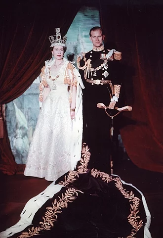

Early life
Elizabeth was born at 02:40 (GMT) on 21 April 1926,[1] during the reign of her paternal grandfather, King George V. Her father, Prince Albert, Duke of York (later King George VI), was the second son of the King. Her mother, Elizabeth Bowes-Lyon, Duchess of York (later Queen Elizabeth The Queen Mother), was the youngest daughter of Scottish aristocrat Claude Bowes-Lyon, 14th Earl of Strathmore and Kinghorne, at whose London home (17 Bruton Street, Mayfair) she was delivered by Caesarean section.[2] She was baptised by the Anglican Archbishop of York, Cosmo Gordon Lang, in the private chapel of Buckingham Palace on 29 May,[3][b] and named Elizabeth after her mother; Alexandra after her paternal great-grandmother, who had died six months earlier; and Mary after her paternal grandmother.[5] Called "Lilibet" by her close family,[6] based on what she called herself at first,[7] she was cherished by her grandfather, George V, whom she affectionately called "Grandpa England",[8] and her regular visits during his serious illness in 1929 were credited in the popular press and by later biographers with raising his spirits and aiding his recovery.
Elizabeth's only sibling, Princess Margaret, was born in 1930. The two princesses were educated at home under the supervision of their mother and their governess, Marion Crawford.[10] Lessons concentrated on history, language, literature, and music.[11] Crawford published a biography of Elizabeth and Margaret's childhood years entitled The Little Princesses in 1950, much to the dismay of the royal family.[12] The book describes Elizabeth's love of horses and dogs, her orderliness, and her attitude of responsibility.[13] Others echoed such observations: Winston Churchill described Elizabeth when she was two as "a character. She has an air of authority and reflectiveness astonishing in an infant."[14] Her cousin Margaret Rhodes described her as "a jolly little girl, but fundamentally sensible and well-behaved".
Second World War
In September 1939, Britain entered the Second World War. Lord Hailsham suggested that Princesses Elizabeth and Margaret should be evacuated to Canada to avoid the frequent aerial bombings of London by the Luftwaffe.[24] This was rejected by their mother, who declared, "The children won't go without me. I won't leave without the King. And the King will never leave."[25] The princesses stayed at Balmoral Castle, Scotland, until Christmas 1939, when they moved to Sandringham House, Norfolk.[26] From February to May 1940, they lived at Royal Lodge, Windsor, until moving to Windsor Castle, where they lived for most of the next five years.[27] At Windsor, the princesses staged pantomimes at Christmas in aid of the Queen's Wool Fund, which bought yarn to knit into military garments.[28] In 1940, the 14-year-old Elizabeth made her first radio broadcast during the BBC's Children's Hour, addressing other children who had been evacuated from the cities.[29] She stated: "We are trying to do all we can to help our gallant sailors, soldiers, and airmen, and we are trying, too, to bear our own share of the danger and sadness of war. We know, every one of us, that in the end all will be well.
In 1943, Elizabeth undertook her first solo public appearance on a visit to the Grenadier Guards, of which she had been appointed colonel the previous year.[30] As she approached her 18th birthday, parliament changed the law so she could act as one of five Counsellors of State in the event of her father's incapacity or absence abroad, such as his visit to Italy in July 1944.[31] In February 1945, she was appointed an honorary second subaltern in the Auxiliary Territorial Service with the service number of 230873.[32] She trained as a driver and mechanic and was given the rank of honorary junior commander (female equivalent of captain at the time) five months later.
At the end of the war in Europe, on Victory in Europe Day, Elizabeth and Margaret mingled incognito with the celebrating crowds in the streets of London. Elizabeth later said in a rare interview, "We asked my parents if we could go out and see for ourselves. I remember we were terrified of being recognised ... I remember lines of unknown people linking arms and walking down Whitehall, all of us just swept along on a tide of happiness and relief.
During the war, plans were drawn up to quell Welsh nationalism by affiliating Elizabeth more closely with Wales. Proposals, such as appointing her Constable of Caernarfon Castle or a patron of Urdd Gobaith Cymru (the Welsh League of Youth), were abandoned for several reasons, including fear of associating Elizabeth with conscientious objectors in the Urdd at a time when Britain was at war.[37] Welsh politicians suggested she be made Princess of Wales on her 18th birthday. Home Secretary Herbert Morrison supported the idea, but the King rejected it because he felt such a title belonged solely to the wife of a Prince of Wales and the Prince of Wales had always been the heir apparent.[38] In 1946, she was inducted into the Gorsedd of Bards at the National Eisteddfod of Wales.
Princess Elizabeth went on her first overseas tour in 1947, accompanying her parents through southern Africa. During the tour, in a broadcast to the British Commonwealth on her 21st birthday, she made the following pledge: "I declare before you all that my whole life, whether it be long or short, shall be devoted to your service and the service of our great imperial family to which we all belong."[40] The speech was written by Dermot Morrah, a journalist for The Times.
Marriage
Elizabeth met her future husband, Prince Philip of Greece and Denmark, in 1934 and again in 1937.[42] They were second cousins once removed through King Christian IX of Denmark and third cousins through Queen Victoria. After meeting for the third time at the Royal Naval College in Dartmouth in July 1939, Elizabeth—though only 13 years old—said she fell in love with Philip, and they began to exchange letters.[43] She was 21 when their engagement was officially announced on 9 July 1947.[
The engagement was not without controversy; Philip had no financial standing, was foreign-born (though a British subject who had served in the Royal Navy throughout the Second World War), and had sisters who had married German noblemen with Nazi links.[45] Marion Crawford wrote, "Some of the King's advisors did not think him good enough for her. He was a prince without a home or kingdom. Some of the papers played long and loud tunes on the string of Philip's foreign origin."[46] Later biographies reported that Elizabeth's mother had reservations about the union initially, and teased Philip as "The Hun".[47][48] In later life, however, the Queen Mother told biographer Tim Heald that Philip was "an English gentleman".
Before the marriage, Philip renounced his Greek and Danish titles, officially converted from Greek Orthodoxy to Anglicanism, and adopted the style Lieutenant Philip Mountbatten, taking the surname of his mother's British family.[50] Shortly before the wedding, he was created Duke of Edinburgh and granted the style His Royal Highness.[51] Elizabeth and Philip were married on 20 November 1947 at Westminster Abbey. They received 2,500 wedding gifts from around the world.[52] Elizabeth required ration coupons to buy the material for her gown (which was designed by Norman Hartnell) because Britain had not yet completely recovered from the devastation of the war.[53] In post-war Britain, it was not acceptable for Philip's German relations, including his three surviving sisters, to be invited to the wedding.[54] Neither was an invitation extended to the Duke of Windsor, formerly King Edward VIII.
Elizabeth gave birth to her first child, Prince Charles, on 14 November 1948. One month earlier, the King had issued letters patent allowing her children to use the style and title of a royal prince or princess, to which they otherwise would not have been entitled as their father was no longer a royal prince.[56] A second child, Princess Anne, was born on 15 August 1950.
Following their wedding, the couple leased Windlesham Moor, near Windsor Castle, until July 1949,[52] when they took up residence at Clarence House in London. At various times between 1949 and 1951, the Duke of Edinburgh was stationed in the British Crown Colony of Malta as a serving Royal Navy officer. He and Elizabeth lived intermittently in Malta for several months at a time in the hamlet of Gwardamanġa, at Villa Guardamangia, the rented home of Philip's uncle, Lord Mountbatten. Their two children remained in Britain.
Reign
When her father died in February 1952, Elizabeth—then 25 years old—became queen of seven independent Commonwealth countries: the United Kingdom, Canada, Australia, New Zealand, South Africa, Pakistan, and Ceylon (known today as Sri Lanka), as well as Head of the Commonwealth. Elizabeth reigned as a constitutional monarch through major political changes such as the Troubles in Northern Ireland, devolution in the United Kingdom, the decolonisation of Africa, and the United Kingdom's accession to the European Communities and withdrawal from the European Union. The number of her realms varied over time as territories gained independence and some realms became republics. Her many historic visits and meetings include state visits to China in 1986, Russia in 1994, and the Republic of Ireland in 2011, and visits with five popes.
Accession and coronation
George VI's health declined during 1951, and Elizabeth frequently stood in for him at public events. When she toured Canada and visited President Harry S. Truman in Washington, D.C., in October 1951, her private secretary, Martin Charteris, carried a draft accession declaration in case of the King's death while she was on tour.[59] In early 1952, Elizabeth and Philip set out for a tour of Australia and New Zealand by way of Kenya. On 6 February 1952, they had just returned to their Kenyan home, Sagana Lodge, after a night spent at Treetops Hotel, when word arrived of the death of George VI and Elizabeth's consequent accession to the throne with immediate effect. Philip broke the news to the new queen.[60] She chose to retain Elizabeth as her regnal name;[61] thus she was called Elizabeth II, which offended many Scots, as she was the first Elizabeth to rule in Scotland.[62] She was proclaimed queen throughout her realms and the royal party hastily returned to the United Kingdom.[63] Elizabeth and Philip moved into Buckingham Palace.
With Elizabeth's accession, it seemed probable that the royal house would bear the Duke of Edinburgh's name, in line with the custom of a wife taking her husband's surname on marriage. Lord Mountbatten advocated the name House of Mountbatten. Philip suggested House of Edinburgh, after his ducal title.[65] The British prime minister, Winston Churchill, and Elizabeth's grandmother, Queen Mary, favoured the retention of the House of Windsor, so Elizabeth issued a declaration on 9 April 1952 that Windsor would continue to be the name of the royal house. The Duke complained, "I am the only man in the country not allowed to give his name to his own children."[66] In 1960, the surname Mountbatten-Windsor was adopted for Philip and Elizabeth's male-line descendants who do not carry royal titles.
Amid preparations for the coronation, Princess Margaret told her sister she wished to marry Peter Townsend, a divorcé‚ 16 years Margaret's senior and with two sons from his previous marriage. The Queen asked them to wait for a year; in the words of her private secretary, "the Queen was naturally sympathetic towards the Princess, but I think she thought—she hoped—given time, the affair would peter out."[68] Senior politicians were against the match and the Church of England did not permit remarriage after divorce. If Margaret had contracted a civil marriage, she would have been expected to renounce her right of succession.[69] Margaret decided to abandon her plans with Townsend.
Despite the death of Queen Mary on 24 March 1953, the coronation went ahead as planned on 2 June, as Mary had requested before she died.[71] The coronation ceremony in Westminster Abbey, with the exception of the anointing and communion, was televised for the first time.[72][c] On Elizabeth's instruction, her coronation gown was embroidered with the floral emblems of Commonwealth countries.
Acceleration of decolonisation
The 1960s and 1970s saw an acceleration in the decolonisation of Africa and the Caribbean. More than 20 countries gained independence from Britain as part of a planned transition to self-government. In 1965, however, the Rhodesian prime minister, Ian Smith, in opposition to moves towards majority rule, unilaterally declared independence while expressing "loyalty and devotion" to Elizabeth, declaring her "Queen of Rhodesia".[101] Although the Queen formally dismissed him, and the international community applied sanctions against Rhodesia, his regime survived for over a decade.[102] As Britain's ties to its former empire weakened, the British government sought entry to the European Community, a goal it achieved in 1973.
The Queen toured Yugoslavia in October 1972, becoming the first British monarch to visit a communist country.[104] She was received at the airport by President Josip Broz Tito, and a crowd of thousands greeted her in Belgrade.[
n February 1974, the British prime minister, Edward Heath, advised the Queen to call a general election in the middle of her tour of the Austronesian Pacific Rim, requiring her to fly back to Britain.[106] The election resulted in a hung parliament; Heath's Conservatives were not the largest party, but could stay in office if they formed a coalition with the Liberals. When discussions on forming a coalition foundered, Heath resigned as prime minister and the Queen asked the Leader of the Opposition, Labour's Harold Wilson, to form a government.
A year later, at the height of the 1975 Australian constitutional crisis, the Australian prime minister, Gough Whitlam, was dismissed from his post by Governor-General Sir John Kerr, after the Opposition-controlled Senate rejected Whitlam's budget proposals.[108] As Whitlam had a majority in the House of Representatives, Speaker Gordon Scholes appealed to the Queen to reverse Kerr's decision. She declined, saying she would not interfere in decisions reserved by the Constitution of Australia for the Governor-General.[109] The crisis fuelled Australian republicanism.
Silver Jubilee
In 1977, Elizabeth marked the Silver Jubilee of her accession. Parties and events took place throughout the Commonwealth, many coinciding with her associated national and Commonwealth tours. The celebrations re-affirmed the Queen's popularity, despite virtually coincident negative press coverage of Princess Margaret's separation from her husband, Lord Snowdon.[110] In 1978, the Queen endured a state visit to the United Kingdom by Romania's communist leader, Nicolae Ceaușescu, and his wife, Elena,[111] though privately she thought they had "blood on their hands".[112] The following year brought two blows: one was the unmasking of Anthony Blunt, former Surveyor of the Queen's Pictures, as a communist spy; the other was the assassination of her relative and in-law Lord Mountbatten by the Provisional Irish Republican Army.
According to Paul Martin Sr., by the end of the 1970s the Queen was worried the Crown "had little meaning for" Pierre Trudeau, the Canadian prime minister.[114] Tony Benn said the Queen found Trudeau "rather disappointing".[114] Trudeau's supposed republicanism seemed to be confirmed by his antics, such as sliding down banisters at Buckingham Palace and pirouetting behind the Queen's back in 1977, and the removal of various Canadian royal symbols during his term of office.[114] In 1980, Canadian politicians sent to London to discuss the patriation of the Canadian constitution found the Queen "better informed ... than any of the British politicians or bureaucrats".[114] She was particularly interested after the failure of Bill C-60, which would have affected her role as head of state.
Turbulent 1990s and annus horribilis
On 24 November 1992, in a speech to mark the Ruby Jubilee of her accession to the throne, Elizabeth called 1992 her annus horribilis (a Latin phrase, meaning "horrible year").[140] Republican feeling in Britain had risen because of press estimates of the Queen's private wealth—contradicted by the Palace—and reports of affairs and strained marriages among her extended family.[141] In March, her second son, Prince Andrew, separated from his wife, Sarah, and Mauritius removed Elizabeth as head of state; her daughter, Princess Anne, divorced Captain Mark Phillips in April;[142] angry demonstrators in Dresden threw eggs at the Queen during a state visit to Germany in October;[143] and a large fire broke out at Windsor Castle, one of her official residences, in November. The monarchy came under increased criticism and public scrutiny.[144] In an unusually personal speech, the Queen said that any institution must expect criticism, but suggested it might be done with "a touch of humour, gentleness and understanding".[145] Two days later, Prime Minister John Major announced plans to reform the royal finances, drawn up the previous year, including the Queen paying income tax from 1993 onwards, and a reduction in the civil list.[146] In December, Prince Charles and his wife, Diana, formally separated.[147] At the end of the year, the Queen sued The Sun newspaper for breach of copyright when it published the text of her annual Christmas message two days before it was broadcast. The newspaper was forced to pay her legal fees and donated £200,000 to charity.[148] The Queen's solicitors had taken action against The Sun five years earlier for breach of copyright, after it published a photograph of her daughter-in-law the Duchess of York and her granddaughter Princess Beatrice. The case was solved with an out-of-court settlement that ordered the newspaper to pay $180,000.
In January 1994, the Queen broke the scaphoid bone in her left wrist as the horse she was riding at Sandringham House tripped and fell.[150] In October 1994, she became the first reigning British monarch to set foot on Russian soil.[d][153] During the four-day visit, which is considered to be one of the most important foreign trips of the Queen's reign,[154] she and Philip attended events in Moscow and St. Petersburg.[155] In October 1995, the Queen was tricked into a hoax call by Montreal radio host Pierre Brassard impersonating Canadian prime minister Jean Chrétien. The Queen, who believed that she was speaking to Chrétien, said she supported Canadian unity, and would try to influence Quebec's referendum on proposals to break away from Canada.
In the year that followed, public revelations on the state of Charles and Diana's marriage continued.[158] In consultation with her husband and John Major, as well as the Archbishop of Canterbury, George Carey, and her private secretary, Robert Fellowes, Elizabeth wrote to Charles and Diana at the end of December 1995, suggesting that a divorce would be advisable.
In August 1997, a year after the divorce, Diana was killed in a car crash in Paris. The Queen was on holiday with her extended family at Balmoral. Diana's two sons, Princes William and Harry, wanted to attend church, so the Queen and the Duke of Edinburgh took them that morning.[160] Afterwards, for five days the royal couple shielded their grandsons from the intense press interest by keeping them at Balmoral where they could grieve in private,[161] but the royal family's silence and seclusion, and the failure to fly a flag at half-mast over Buckingham Palace, caused public dismay.[131][162] Pressured by the hostile reaction, the Queen agreed to return to London and address the nation in a live television broadcast on 5 September, the day before Diana's funeral.[163] In the broadcast, she expressed admiration for Diana and her feelings "as a grandmother" for the two princes.[164] As a result, much of the public hostility evaporated.
In October 1997, Elizabeth and Philip made a state visit to India, which included a controversial visit to the site of the Jallianwala Bagh massacre to pay her respects. Protesters chanted "Killer Queen, go back",[165] and there were demands for her to apologise for the action of British troops 78 years earlier.[166] At the memorial in the park, she and the Duke paid their respects by laying a wreath and stood for a 30‑second moment of silence.[166] As a result, much of the fury among the public softened and the protests were called off.
In November of that year, the Queen and her husband held a reception at Banqueting House to mark their golden wedding anniversary.[167] Elizabeth made a speech and praised Philip for his role as a consort, referring to him as "my strength and stay".
Golden Jubilee
On the eve of the new millennium, the Queen and the Duke of Edinburgh boarded a vessel from Southwark, bound for the Millennium Dome. Before passing under Tower Bridge, the Queen lit the National Millennium Beacon in the Pool of London using a laser torch.[168][169] Shortly before midnight, she officially opened the Dome.[170] During the singing of Auld Lang Syne, the Queen held hands with the Duke and British prime minister Tony Blair.
In 2002, the Queen marked her Golden Jubilee, the 50th anniversary of her accession. Her sister and mother died in February and March respectively, and the media speculated on whether the Jubilee would be a success or a failure.[173] She again undertook an extensive tour of her realms, beginning in Jamaica in February, where she called the farewell banquet "memorable" after a power cut plunged the King's House, the official residence of the governor-general, into darkness.[174] As in 1977, there were street parties and commemorative events, and monuments were named to honour the occasion. One million people attended each day of the three-day main Jubilee celebration in London,[175] and the enthusiasm shown for the Queen by the public was greater than many journalists had anticipated.
In 2003, the Queen sued Daily Mirror for breach of confidence and obtained an injunction which prevented the outlet from publishing information gathered by a reporter who posed as a footman at Buckingham Palace.[177] The newspaper also paid £25,000 towards her legal costs.[178] Though generally healthy throughout her life, in 2003 the Queen had keyhole surgery on both knees. In October 2006, she missed the opening of the new Emirates Stadium because of a strained back muscle that had been troubling her since the summer.
COVID-19 pandemic
On 19 March 2020, as the COVID-19 pandemic hit the United Kingdom, the Queen moved to Windsor Castle and sequestered there as a precaution.[216] Public engagements were cancelled and Windsor Castle followed a strict sanitary protocol nicknamed "HMS Bubble".
On 5 April, in a televised broadcast watched by an estimated 24 million viewers in the UK,[218] she asked people to "take comfort that while we may have more still to endure, better days will return: we will be with our friends again; we will be with our families again; we will meet again."[219] On 8 May, the 75th anniversary of VE Day, in a TV broadcast at 9 p.m.—the exact time at which her father George VI had broadcast to the nation on the same day in 1945—she asked people to "never give up, never despair".[220] In October, she visited the UK's Defence Science and Technology Laboratory in Wiltshire, her first public engagement since the start of the pandemic.[221] On 4 November, she appeared masked for the first time in public, during a private pilgrimage to the Tomb of the Unknown Warrior at Westminster Abbey, to mark the centenary of his burial.[222] In 2021, she received her first and second COVID-19 vaccinations in January and April respectively.
Prince Philip died on 9 April 2021, after 73 years of marriage, making Elizabeth the first British monarch to reign as a widow or widower since Queen Victoria.[225][226] She was reportedly at her husband's bedside when he died,[227] and remarked in private that his death had "left a huge void".[228] Due to the COVID-19 restrictions in place in England at the time, the Queen sat alone at Philip's funeral service, which evoked sympathy from people around the world.[229][230] In her Christmas broadcast that year, she paid a personal tribute to her "beloved Philip", saying, "That mischievous, inquiring twinkle was as bright at the end as when I first set eyes on him".[
Despite the pandemic, the Queen attended the 2021 State Opening of Parliament in May,[233] and the 47th G7 summit in June.[234] On 5 July, the 73rd anniversary of the founding of the UK's National Health Service, she announced that the NHS will be awarded the George Cross to "recognise all NHS staff, past and present, across all disciplines and all four nations".[235] In October 2021, she began using a walking stick during public engagements for the first time since her operation in 2004.[236] Following an overnight stay in hospital on 20 October, visits to Northern Ireland,[237] the COP26 summit in Glasgow,[238] and the 2021 National Service of Remembrance were cancelled on health grounds.
Platinum Jubilee
The Queen's Platinum Jubilee began on 6 February 2022, marking 70 years since she acceded to the throne on her father's death. On the eve of the date, she held a reception at Sandringham House for pensioners, local Women's Institute members and charity volunteers.[240] In her Accession Day message, Elizabeth renewed her commitment to a lifetime of public service, which she had originally made in 1947.[
Later that month, the Queen had "mild cold-like symptoms" and tested positive for COVID-19, along with some staff and family members.[242][243] She cancelled two virtual audiences on 22 February,[244] but held a phone conversation with Prime Minister Boris Johnson the following day amid a crisis on the Russo-Ukrainian border,[e][245] following which she made a donation to the Disasters Emergency Committee (DEC) Ukraine Humanitarian Appeal.[246] On 28 February, she was reported to have recovered and spent time with her family at Frogmore.[247] On 7 March, the Queen met Canadian prime minister Justin Trudeau at Windsor Castle, in her first in-person engagement since her COVID diagnosis.[248] She later remarked that COVID infection "leave[s] one very tired and exhausted ... It's not a nice result".
The Queen was present at the service of thanksgiving for Prince Philip at Westminster Abbey on 29 March,[250] but was unable to attend the annual Commonwealth Day service that month[251] or the Royal Maundy Service in April.[252] She missed the State Opening of Parliament in May for the first time in 59 years. (She did not attend in 1959 and 1963 as she was pregnant with Prince Andrew and Prince Edward, respectively.)[253] In her absence, Parliament was opened by the Prince of Wales and the Duke of Cambridge as Counsellors of State.[254] On 17 May, the Queen officially opened the Elizabeth line in central London.
During the Platinum Jubilee celebrations, the Queen was largely confined to balcony appearances, and missed the National Service of Thanksgiving.[256] For the Jubilee concert, she took part in a sketch with Paddington Bear, that opened the event outside Buckingham Palace.[257] On 13 June 2022, she became the second-longest reigning monarch in history among those whose exact dates of reign are known, with 70 years, 127 days reigned—surpassing King Bhumibol Adulyadej of Thailand.[258] On 6 September 2022, she appointed her 15th British prime minister, Liz Truss, at Balmoral Castle in Scotland, the first and only time she did not receive a new prime minister at Buckingham Palace during her reign.
The Queen never planned to abdicate,[260] though she took on fewer public engagements as she grew older and Prince Charles took on more of her duties.[261] In June 2022, she met with the Archbishop of Canterbury, Justin Welby, who "came away thinking there is someone who has no fear of death, has hope in the future, knows the rock on which she stands and that gives her strength."
Death
On 8 September 2022, Buckingham Palace announced that Elizabeth was under medical supervision at Balmoral Castle after doctors expressed concern. The statement read, "Following further evaluation this morning, Elizabeth's doctors are concerned for Her Majesty's health and have recommended she remain under medical supervision. The Queen remains comfortable and at Balmoral."[263][264] Elizabeth's four children, along with her daughters-in-law and grandsons Prince William and Prince Harry, travelled to Balmoral.[265][266] Her death was confirmed that evening at 18:30 BST,[267][268] setting in motion Operation London Bridge and, because she died in Scotland, Operation Unicorn.